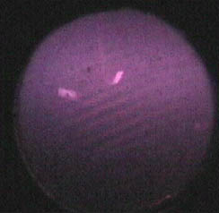
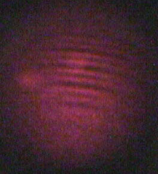

Lab1- 8/31/01
Calibrated Fabry-Perot Interferometer and tested the alignment.
Alignment appears to be correct by laser dot. (diagram 1)
First problem during alignment: three laser-like dots appeared on the viewing screen. To correct this issue an ground glass plate was placed between the laser and the first contact lens.
The next issue occurred when attempting to resolve the doublets in the "bulls eye" circular pattern. Eventually all members viewed doublet separation. (Diagram 2) The problem occurred from over compensation of the interferometers distance. Minute adjustments had to be made with the spring-loaded knobs on the face plate.
Lab 2 9/7/01
Upon zeroing the F-P interferometer, it was observed that by turning the measurement dial entirely to the left, 35mm, the doublets were clearly seen.
All members took readings of separation distance from the zero mark, at 35mm, the doublets were clearly seen.
A problem occurred when the adjusting knob on the interferometer fastened itself to the stationary inner cylinder used to take measurements. This was overcome with the use of several various tools and non-tools to loosen and refasten to the interferometer.
Another issue that was observed was that the lower fire adjusting knob had the washer stripped and would not be able to move. Diagram 2
| Number | Name | x1 | x2 | Delta x |
| 1 | Alan | 5.0 | 34.5 | 29.5 |
| 2 | Alan | 34.5 | 16.4 | 18.1 |
| 3 | Alan | 4.4 | 34.6 | 30.2 |
| 1 | Jay | 3.2 | 31.2 | 28.0 |
| 2 | Jay | 31.2 | 13.7 | 32.5 |
| 3 | Jay | 6.5 | 35.2 | 28.7 |
| 1 | John | 0.0 | 30.4 | 30.4 |
| 2 | John | 30.4 | 13.6 | 33.2 |
| 3 | John | 3.0 | 34.0 | 31.0 |
Avg of all
30.66
|  |  |